Taller 3. Diversidad filogenética: bloques A1, A2, B1 y B2
Los datos de este y el resto de talleres con peces, son tomados del manuscrito de Ruiz-Campos et al. (2021) (enlace_manuscrito).
Materiales requeridos para el taller en clase
En el siguiente enlace se puede descargar el archivo comprimido del taller, donde se aplican procedimientos de diversidad filogenética - PD en RStudio, con el mismo caso guiado de peces de México de los talleres anteriores (📰 Taller3_Diversidad_Filogenetica).
Nota: una vez se descarguen los materiales, se requiere descomprimirlos antes de realizar cualquier procedimiento y seguir las orientaciones del docente para realizar los ejercicios requeridos. La carpeta contiene datos.xlsx, arbol_filo_beta.rds, Rao.R, alineador.R y la carpeta fig_portada/.
Diapositivas en vivo - Slides.com
 *Pendiente de cargar el taller
*Pendiente de cargar el taller
- Diapositivas del Taller3_Diversidad_Filogenetica *Pendiente de cargar diapositivas
Los temas de profundización (modelos nulos, perfil de tiempo, espacio filogenético, puente entre FD y PD, entre otros) y la asignación 6.2, están en la guía complementaria y el Cuestionario de profundización al final del taller.
Para tener en cuenta
- Unidad IV (Diversidad Filogenética). El taller repite la arquitectura metodológica del Taller 2: A1, A2, B1 y B2. Resultados de aprendizaje esperados (RA):
- RA1: Calcular e interpretar métricas de diversidad filogenética - PD - con R, y compararlas con TD y FD.
- RA2: Diseñar flujos de trabajo reproducibles en R, incluyendo la armonización de nombres entre abundancias y árbol.
- Requisito: Haber terminado los Talleres 1 y 2 y disponer de
datos.xlsx,arbol_filo_beta.rds,Rao.Ryalineador.Ren la misma carpeta de este.qmd. - Parte 1 del taller: Preparación del árbol, bloque A1 (Faith, 1992; Webb et al., 2002) y bloque A2 (De Bello et al., 2010).
- Parte 2 del taller: Bloques B1 (Chao et al., 2021) y B2 (Chao et al., 2023) e integración de resultados.
- Parte 3 del taller: Ejercicios de práctica dirigida.
Mapa conceptual del taller
Nota
La multidimensionalidad responde a qué dimensión de la biodiversidad se estudia (TD, FD o PD) y la multiescalaridad a a qué escala se descompone (α, β y γ). En este taller la dimensión es PD, con los mismos bloques del Taller 2:
- A1 — Métricas clásicas de PD: PD de Faith y MPD.
- A2 — Entropía cuadrática de Rao: partición de PD en α, β y γ con la misma función
Rao(). - B1 — Números efectivos de Hill para PD alfa:
iNEXT3D()a cobertura común. - B2 — Números efectivos de Hill para PD beta:
iNEXTbeta3D()a cobertura común.
ImportanteLo que cambia y lo que no cambia respecto al Taller 2
La lógica es la misma; cambia el insumo que describe qué tan distintas son dos especies.
| Paso | Taller 2 (FD) | Taller 3 (PD) |
|---|---|---|
| Insumo de diferencias | Rasgos → distancia de Gower (rasgos.d) |
Árbol → distancia cofenética (phylo.d) |
| Visualización base | Dendrograma funcional | El árbol mismo |
| A1 | dbFD(): FRic, FEve, FDiv, FDis, RaoQ |
picante: PD de Faith, MPD |
| A2 | Rao(dfunc = rasgos.d) |
Rao(dphyl = phylo.d) |
| B1 | iNEXT3D(FDdistM, FDtype = "AUC") |
iNEXT3D(PDtree, PDtype = "meanPD") |
| B2 | iNEXTbeta3D(FDdistM, ...) |
iNEXTbeta3D(PDtree, ...) |
AdvertenciaQué tipo de árbol se usa aquí
El árbol del caso guiado se construyó a partir de la clasificación taxonómica de las especies (clase, orden, familia, género), no a partir de ADN. Sus ramas no representan tiempo evolutivo: la PD que se calcula mide, en sentido estricto, distinción taxonómica, y así debe interpretarse.
Cargar librerías y datos
1. Cargar librerías
Código
library(tidyverse) # Ecosistema tidyverse (dplyr, tidyr, ggplot2, purrr, ...)
library(readxl) # Habilita la lectura de archivos .xlsx
library(kableExtra) # Habilita el formato enriquecido de tablas
library(ape) # Lectura, poda y gráfico de árboles; distancia cofenética
library(phytools) # Aporta bind.tip() (ubicar especies en el árbol)
library(picante) # Aporta pd() y mpd()
library(FD) # Aporta gowdis() (distancia funcional del Taller 2)
library(iNEXT.3D) # Aporta iNEXT3D() y estimate3D(): PD alfa
library(iNEXT.beta3D) # Aporta iNEXTbeta3D(): PD beta
# Nota: phytools carga el paquete 'maps', que tiene otra función map().
# Por eso en este taller se escribe purrr::map() de forma explícita.
TipSi aparece el mensaje “invalid tbl_tree object”
Con algunas versiones del paquete tidytree, las funciones de iNEXT.3D e iNEXT.beta3D imprimen muchas veces el aviso “invalid tbl_tree object”. Es un aviso informativo, no un error: los resultados no cambian. En este documento se oculta con message: false.
2. Cargar bases de datos (tax, rasgos_raw, coord)
Es el mismo procedimiento del Taller 2 (abundancias, zonas, rasgos, distancia de Gower y coordenadas). Lo único nuevo es str_squish(), que elimina espacios dobles en los nombres de las especies: con PD, un espacio de más basta para que una especie “desaparezca” del árbol.
Código
ruta_datos <- "datos.xlsx"
# --- Abundancias: sitios x especies ---
tax <- read_xlsx(ruta_datos, sheet = "tax")
biol1 <- tax %>%
dplyr::select(-Sites, -Sites1) %>% # Retira las columnas de identificación
mutate(across(everything(), ~ as.numeric(trimws(as.character(.))))) %>% # Fuerza a numérico
mutate(across(everything(), ~ replace(.x, is.na(.x), 0))) %>% # Celdas vacías -> 0
as.data.frame()
rownames(biol1) <- tax$Sites
colnames(biol1) <- str_squish(colnames(biol1)) # Quita espacios dobles (nuevo)
zonas <- tax %>% dplyr::select(Sites, Zona = Sites1) # Zona de cada sitio
# --- Rasgos y distancia funcional (solo para comparar con FD en A2) ---
rasgos_raw <- read_xlsx(ruta_datos, sheet = "rasgos") %>%
mutate(LatinName = str_squish(LatinName))
rasgos1 <- rasgos_raw %>%
column_to_rownames("LatinName") %>%
dplyr::select(TrophicLevel, BodyLength,
BodyLengthMax, ShapeFactor,
omnivory, detritivory, herbivory,
invertivory, piscivory, carnivory)
rasgos1 <- rasgos1[colnames(biol1), ] # Mismo orden que biol1
vars_bin <- c("omnivory", "detritivory", "herbivory",
"invertivory", "piscivory", "carnivory")
rasgos.d <- gowdis(rasgos1,
asym.bin = match(vars_bin, colnames(rasgos1))) # Gower (Taller 2)
# --- Coordenadas ---
coord <- read_xlsx(ruta_datos, sheet = "coord") %>%
mutate(Code = str_remove_all(Code, "[^A-Za-z0-9]")) %>% # Caracteres ocultos (Taller 1)
dplyr::select(Code, Longitude, Latitude) %>%
column_to_rownames("Code")
coord <- coord[rownames(biol1), ]
escalar_cex <- function(x, min_cex = 0.4, max_cex = 3.2) { # Escala de círculos (Taller 2)
rango <- range(x, na.rm = TRUE)
if (diff(rango) == 0) return(rep(mean(c(min_cex, max_cex)),
length(x)))
min_cex + (x - rango[1]) / diff(rango) * (max_cex - min_cex)
}
# Chequeos duros
stopifnot(identical(colnames(biol1), rownames(rasgos1)),
identical(rownames(biol1), rownames(coord)))
dim(biol1) # 42 sitios x 87 especies[1] 42 87Del árbol a la distancia filogenética
En el Taller 2 el primer paso fue convertir los rasgos en una matriz de distancias de Gower. Aquí el equivalente es convertir el árbol en una matriz de distancias filogenéticas. Antes, el árbol debe “hablar el mismo idioma” que la matriz de abundancias.
a. Cargar el árbol
Código
arbol_raw <- readRDS("arbol_filo_beta.rds") # Árbol taxonómico (objeto 'phylo')
arbol_raw # Puntas, nodos y longitudes de rama
Phylogenetic tree with 86 tips and 55 internal nodes.
Tip labels:
Hyps, Elps, Mgla, Albv, Angr, Myrp, ...
Node labels:
Gnathostomata, Teleostei, Elopomorpha, Clupeocephala, Eurypterygia, Otomorpha, ...
Rooted; includes branch length(s).Código
is.ultrametric(arbol_raw) # ¿Todas las puntas a la misma distancia de la raíz?[1] TRUECódigo
max(node.depth.edgelength(arbol_raw)) # Profundidad del árbol (raíz -> puntas)[1] 50Código
head(arbol_raw$tip.label, 6) # ¡Las puntas son abreviaturas, no nombres científicos![1] "Hyps" "Elps" "Mgla" "Albv" "Angr" "Myrp"
NotaTres cosas que hay que notar
El árbol es ultramétrico (todas las especies a 50 unidades de la raíz), tiene politomías (las especies de un mismo género salen del mismo nodo, porque la clasificación no dice cuál es más cercana) y sus puntas están en abreviaturas. Sin armonizar los nombres, ningún cálculo de PD funcionaría.
b. Armonizar los nombres del árbol con los de las abundancias
Se usa la hoja tax1, que relaciona cada abreviatura con su nombre científico.
Código
tax1 <- read_xlsx(ruta_datos, sheet = "tax1") %>%
mutate(LatinName = str_squish(LatinName))
dic <- setNames(tax1$LatinName, tax1$Abrev) # dic["Hyps"] = "Hypanus sabinus"
arbol_filo <- arbol_raw
arbol_filo$tip.label <- unname(ifelse(
arbol_filo$tip.label %in% names(dic), # Si la punta es una abreviatura conocida...
dic[arbol_filo$tip.label], # ...se reemplaza por el nombre científico
arbol_filo$tip.label)) # ...si no, se deja para revisarla
# El "detective" del Taller 1, ahora con el árbol:
setdiff(colnames(biol1), arbol_filo$tip.label) # Especies con abundancia que NO están en el árbol[1] "Notropis aguirrepequenoi" "Dajaus monticola"
[3] "Symphurus civitatum" Código
setdiff(arbol_filo$tip.label, colnames(biol1)) # Puntas del árbol que NO están en las abundancias[1] "Agonostomus monticola" "Symphurus civitatium" Los dos setdiff() revelan tres errores frecuentes en cualquier base de datos real:
Abundancias (biol1) |
Árbol | Tipo de problema |
|---|---|---|
| Dajaus monticola | Agonostomus monticola | Sinónimo (el nombre aceptado es Dajaus monticola) |
| Symphurus civitatum | Symphurus civitatium | Error tipográfico |
| Notropis aguirrepequenoi | — | Especie ausente (no reconocida por la base taxonómica) |
Un cuarto problema ya lo resolvió str_squish(): Astyanax mexicanus venía escrita con dos espacios en la hoja tax. Sin esa corrección, los sitios 25M y 28M (donde es la única especie) se habrían quedado sin especies para PD.
Código
correcciones <- c(
"Agonostomus monticola" = "Dajaus monticola", # Sinónimo -> nombre aceptado
"Symphurus civitatium" = "Symphurus civitatum" # Error tipográfico -> nombre correcto
)
arbol_filo$tip.label <- recode(arbol_filo$tip.label, !!!correcciones)
setdiff(colnames(biol1), arbol_filo$tip.label) # Queda solo Notropis aguirrepequenoi[1] "Notropis aguirrepequenoi"c. Ubicar la especie que falta
Notropis aguirrepequenoi aporta casi 1.000 individuos en la zona M: excluirla cambiaría las métricas ponderadas por abundancia. Como el árbol es taxonómico, se ubica con el mismo criterio con que se construyó: en su clado más cercano disponible, la subfamilia Pogonichthyinae (junto con Cyprinella, Campostoma y Dionda).
Código
nodo <- which(arbol_filo$node.label == "Pogonichthyinae") + Ntip(arbol_filo) # Nodo del clado
prof_total <- max(node.depth.edgelength(arbol_filo)) # Profundidad (50)
prof_nodo <- node.depth.edgelength(arbol_filo)[nodo] # Profundidad del nodo
arbol_filo <- phytools::bind.tip(
arbol_filo,
tip.label = "Notropis aguirrepequenoi", # Nombre exacto, igual al de biol1
edge.length = prof_total - prof_nodo, # Mantiene el árbol ultramétrico
where = nodo # Se une al nodo (politomía)
)
stopifnot(setequal(arbol_filo$tip.label, colnames(biol1)), # Mismas especies en árbol y datos
is.ultrametric(arbol_filo))
Ntip(arbol_filo) # 87 especies: las mismas del Taller 2[1] 87
TipPor qué ubicarla y no excluirla
Con el árbol completo, TD, FD y PD se calculan con las mismas 87 especies: los valores de TD y FD de este taller son idénticos a los del Taller 2, y cualquier diferencia con PD se debe a la dimensión. Cuánto cambiaría el resultado si se excluyera se analiza en la guía complementaria (sección 1).
d. El árbol de las especies y su presencia por zona
En el Taller 2 el dendrograma funcional permitía ver el espacio funcional antes de resumirlo; aquí esa función la cumple el propio árbol.
Código
# Abundancias por zona (zonas x especies)
biol_zona_sp <- biol1 %>%
rownames_to_column("Sites") %>%
left_join(zonas, by = "Sites") %>%
dplyr::select(-Sites) %>%
group_by(Zona) %>%
summarise(across(everything(), sum), .groups = "drop") %>%
column_to_rownames("Zona")
zonas_id <- rownames(biol_zona_sp) # Nombres de las zonas (de los datos)
cols_zona <- setNames(RColorBrewer::brewer.pal(max(3, length(zonas_id)), "Dark2")[seq_along(zonas_id)],
zonas_id) # Un color por zona
pres <- (biol_zona_sp > 0)[, arbol_filo$tip.label] # Presencia, en el orden del árbol
par(mar = c(1, 1, 1, 1))
plot(arbol_filo, cex = 0.55, font = 3, label.offset = 8,
edge.width = 0.8, x.lim = c(0, 95), no.margin = TRUE)
for (i in seq_along(zonas_id)) {
z <- zonas_id[i]
tiplabels(pch = ifelse(pres[z, ], 15, 0), col = cols_zona[z], # Relleno = presente
cex = 0.8, offset = 1.5 + (i - 1) * 2.2) # Una columna por zona
}
nodelabels(arbol_filo$node.label, frame = "none",
cex = 0.4, col = "grey45", adj = c(1.05, -0.4))
legend("topleft", legend = zonas_id, pch = 15, col = cols_zona,
bty = "n", title = "Zona", cex = 0.85)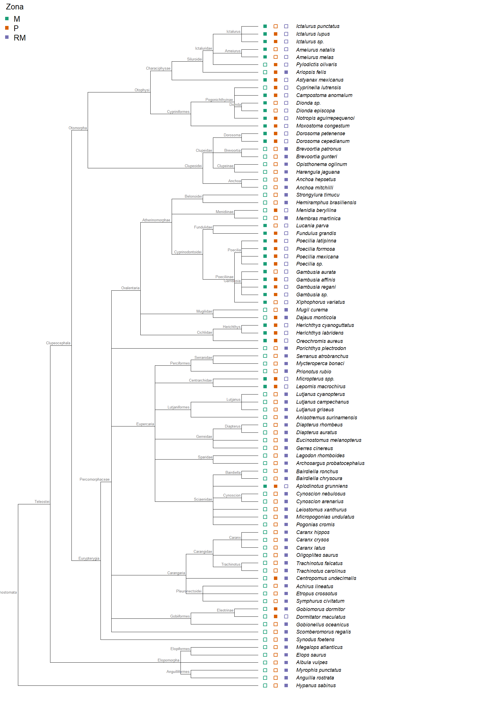
TipCómo leer este árbol
Los linajes de agua dulce (bagres, carácidos, ciprínidos, poecílidos y cíclidos, en la mitad superior) están en M y P, mientras que RM está ocupada casi por completo por linajes marino-estuarinos (corvinas, pargos, jureles, mojarras, sábalos y anguilas). La desembocadura no tiene “más de lo mismo”, sino ramas del árbol que las otras zonas no tienen. Esta lectura visual es la hipótesis que los bloques A1–B2 van a cuantificar.
e. Distancia filogenética (cofenética)
La distancia cofenética entre dos especies es la longitud de rama que hay que recorrer para ir de una a la otra pasando por su ancestro común. Se reescala a [0, 1], igual que la distancia de Gower.
Código
phydist <- cophenetic(arbol_filo)[colnames(biol1), colnames(biol1)] # Especie x especie, orden de biol1
phylo.d <- as.dist(phydist / max(phydist)) # Distancia filogenética en [0, 1]
round(as.matrix(phylo.d)[1:4, 1:4], 3) # Fragmento 4x4 Hypanus sabinus Elops saurus Megalops atlanticus
Hypanus sabinus 0 1.000 1.000
Elops saurus 1 0.000 0.280
Megalops atlanticus 1 0.280 0.000
Albula vulpes 1 0.323 0.323
Albula vulpes
Hypanus sabinus 1.000
Elops saurus 0.323
Megalops atlanticus 0.323
Albula vulpes 0.000A1. Métricas clásicas de diversidad filogenética
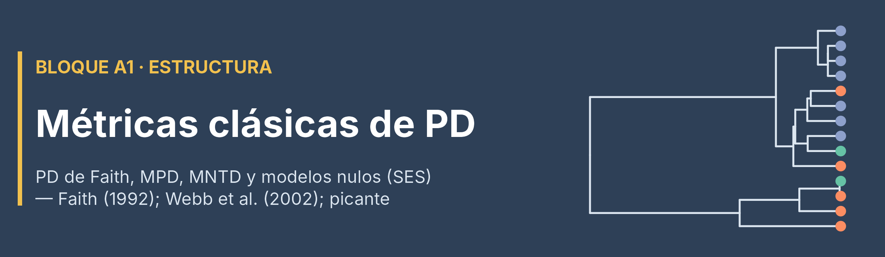
Del A1 funcional al A1 filogenético
El marco de Villéger et al. (2008) se diseñó para el espacio de rasgos y no incluye PD. Pero Tucker et al. (2017) mostraron que las métricas filogenéticas responden a las mismas tres preguntas que los índices de Villéger, de modo que el bloque A1 se traslada casi uno a uno:
| Faceta (Tucker et al., 2017) | Pregunta | A1 funcional (Taller 2) | A1 filogenético (este taller) |
|---|---|---|---|
| Riqueza | ¿Cuánto espacio, o cuánto árbol, ocupa la comunidad? | FRic | PD de Faith (Faith, 1992) |
| Divergencia | ¿Qué tan distintas son las especies entre sí? | FDiv, FDis, RaoQ | MPD (Webb et al., 2002) |
| Regularidad | ¿Qué tan uniforme es el reparto? | FEve | PSE, PSV (guía complementaria) |
En este taller se trabajan las dos primeras facetas con el paquete picante (Kembel et al., 2010).
- PD de Faith: suma de las longitudes de todas las ramas que conectan a las especies presentes.
- MPD (mean pairwise distance): distancia filogenética promedio entre pares de individuos. Ponderada por abundancia, es la misma entropía de Rao que
dbFD()reportaba como RaoQ en el Taller 2, ahora con distancias filogenéticas (se comprueba en A2).
a. PD de Faith y riqueza de especies
Código
pd_faith <- pd(biol1, arbol_filo, include.root = TRUE) # PD de Faith (PD) y riqueza (SR) por sitio
cor(pd_faith$PD, pd_faith$SR) # ¿Cuánto se parece PD a la simple riqueza?[1] 0.9850338Código
pd_faith %>%
rownames_to_column("Sitio") %>%
left_join(zonas, by = c("Sitio" = "Sites")) %>%
ggplot(aes(SR, PD, color = Zona)) +
geom_point(size = 2.6, alpha = 0.85) +
scale_color_manual(values = cols_zona) +
labs(x = "Riqueza de especies (SR)", y = "PD de Faith",
title = "PD de Faith frente a riqueza") +
theme_classic(base_size = 13) +
theme(plot.title = element_text(face = "bold", hjust = 0.5))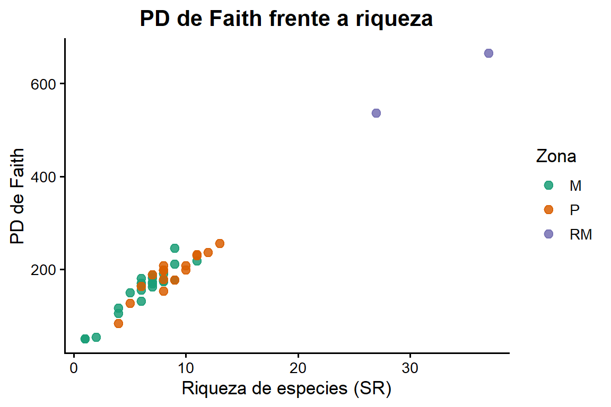
AdvertenciaLa PD de Faith casi repite la riqueza
Con una correlación cercana a 0,98, la PD de Faith dice poco que no diga ya la riqueza: cada especie nueva agrega su rama al total. Por eso se acompaña de una métrica que no crece automáticamente con el número de especies: el MPD.
b. MPD por zona
Código
pd_a1_zona <- tibble(
Zona = zonas_id,
SR = pd(biol_zona_sp, arbol_filo)$SR, # Riqueza por zona
PD = pd(biol_zona_sp, arbol_filo)$PD, # PD de Faith por zona
MPD = mpd(biol_zona_sp, phydist,
abundance.weighted = TRUE), # MPD ponderado por abundancia
MPD_presencia = mpd(biol_zona_sp, phydist,
abundance.weighted = FALSE) # MPD solo con presencias
)
pd_a1_zona %>%
kbl(booktabs = TRUE, digits = 2, align = "c",
caption = "Métricas clásicas de PD por zona (abundancias sumadas)") %>%
kable_styling(bootstrap_options = c("striped", "hover", "condensed"),
full_width = FALSE, position = "center") %>%
row_spec(0, bold = TRUE, color = "white", background = "#2E4057") %>%
column_spec(1, bold = TRUE)| Zona | SR | PD | MPD | MPD_presencia |
|---|---|---|---|---|
| M | 30 | 364.81 | 45.02 | 58.97 |
| P | 30 | 456.83 | 48.92 | 61.90 |
| RM | 53 | 861.17 | 62.03 | 65.27 |
ImportanteInterpretación de A1
RMtiene la mayor PD de Faith (más especies y más ramas) y también el mayor MPD: sus especies vienen de linajes profundamente distintos (rayas, sábalos, clupeidos y muchos percomorfos marinos).MyPtienen la misma riqueza (30 especies), peroPtiene mayor PD de Faith: sus 30 especies cubren más ramas del árbol.- En las tres zonas el MPD ponderado es menor que el de presencias, sobre todo en
MyP: las especies dominantes están más emparentadas entre sí que el conjunto de especies presentes (unos pocos linajes concentran la mayoría de los individuos). - ¿Un MPD de 45 es alto o bajo? Responderlo exige compararlo con lo esperado por azar (modelos nulos, SES, NRI y NTI). Ese análisis se desarrolla en la guía complementaria (sección 3).
NotaPregunta ecológica de A1
¿Qué tan emparentadas están las especies que coexisten en cada zona? A1 todavía no dice cuánto de la PD regional se debe a diferencias entre zonas. Esa pregunta se aborda en A2.
A2. Entropía cuadrática de Rao y partición α–β–γ
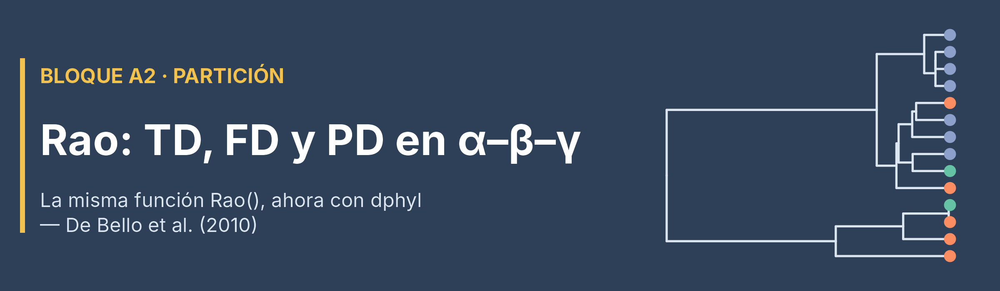
A2 es el bloque que menos cambia respecto al Taller 2: la función Rao() y la partición (\(\gamma = \overline{\alpha} + \beta_{add}\)) son las mismas. La diferencia es que ahora se le entrega también la distancia filogenética en dphyl, y la función devuelve TD, FD y PD en una sola llamada (De Bello et al., 2010).
a. Ejecutar Rao() con las tres dimensiones
Código
biol_zona <- as.data.frame(t(biol_zona_sp)) # Especies (filas) x zonas (columnas), formato de Rao()
stopifnot(identical(rownames(biol_zona), labels(phylo.d))) # Mismo orden que la distancia filogenética
source("Rao.R")
rao_zonas <- Rao(
sample = biol_zona, # Abundancias (especies x zonas)
dfunc = rasgos.d, # Distancia funcional (Gower), igual que en el Taller 2
dphyl = phylo.d, # Distancia filogenética — lo nuevo
weight = FALSE, # Definición original de Rao (mismo criterio del Taller 2)
Jost = FALSE # Sin corrección de Jost (mismo criterio del Taller 2)
)b. Diversidad α por zona en las tres dimensiones
Código
tabla_alfa_3d <- tibble(
Zona = names(rao_zonas$PD$Alpha),
Alfa_TD = as.numeric(rao_zonas$TD$Alpha), # Simpson (Gini-Simpson)
Alfa_FD = as.numeric(rao_zonas$FD$Alpha), # Rao funcional (idéntico al Taller 2)
Alfa_PD = as.numeric(rao_zonas$PD$Alpha) # Rao filogenético
)
tabla_alfa_3d %>%
kbl(booktabs = TRUE, digits = 3, align = "c",
caption = "Diversidad alfa de Rao por zona en las tres dimensiones") %>%
kable_styling(bootstrap_options = c("striped", "hover", "condensed"),
full_width = FALSE, position = "center") %>%
row_spec(0, bold = TRUE, color = "white", background = "#2E4057") %>%
column_spec(1, bold = TRUE)| Zona | Alfa_TD | Alfa_FD | Alfa_PD |
|---|---|---|---|
| M | 0.788 | 0.083 | 0.450 |
| P | 0.894 | 0.154 | 0.489 |
| RM | 0.935 | 0.219 | 0.620 |
Código
# Comprobación del empalme A1 -> A2: el MPD ponderado es la Q de Rao en unidades del árbol
round(pd_a1_zona$MPD / max(phydist), 3)[1] 0.450 0.489 0.620La última línea devuelve exactamente la columna Alfa_PD: el MPD de A1 y la Q de Rao de A2 son la misma medida, solo que el MPD está en unidades del árbol y Rao en la escala [0, 1].
c. Beta entre pares de zonas en las tres dimensiones
Código
pares_rao <- combn(zonas_id, 2, simplify = FALSE) # Todos los pares de zonas
beta_par <- function(d) {
m <- as.matrix(rao_zonas[[d]]$Pairwise_samples$Beta_prop) # Beta proporcional (%) entre pares
map_dbl(pares_rao, ~ m[.x[2], .x[1]])
}
rao_beta_3d <- tibble(
Comparacion = map_chr(pares_rao, paste, collapse = "_vs_"),
TD = beta_par("TD"),
FD = beta_par("FD"),
PD = beta_par("PD")
)
rao_beta_3d %>%
kbl(booktabs = TRUE, digits = 2, align = "c",
caption = "Beta proporcional de Rao (%) entre pares de zonas, en TD, FD y PD (sin estandarizar)") %>%
kable_styling(bootstrap_options = c("striped", "hover", "condensed"),
full_width = FALSE, position = "center") %>%
row_spec(0, bold = TRUE, color = "white", background = "#2E4057") %>%
row_spec(which.max(rao_beta_3d$PD), bold = TRUE, background = "#FDECEC") # Par más divergente en PD| Comparacion | TD | FD | PD |
|---|---|---|---|
| M_vs_P | 2.36 | 1.60 | 1.66 |
| M_vs_RM | 7.44 | 15.76 | 10.92 |
| P_vs_RM | 4.44 | 10.31 | 7.60 |
NotaQué dice la comparación de las tres dimensiones
- En las tres dimensiones el par más diferenciado es
M_vs_RMy el menos diferenciado esM_vs_P: el gradiente montaña → desembocadura es consistente. - Entre
MyPla diferencia es sobre todo taxonómica (TD > FD ≈ PD): cambian las especies, pero se conservan los linajes y las funciones. - Entre
MyRMla diferencia es mayor en FD y PD que en TD: entran linajes y funciones que no existían río arriba. - Como en el Taller 2, esta partición no corrige el desbalance de esfuerzo (24, 16 y 2 sitios). Se confirma con B1 y B2.
d. Mapa de la diversidad alfa por sitio (TD, FD y PD)
En el Taller 2 se dejó este mapa con dos paneles y la promesa de agregar el tercero “sin cambiar nada más”:
Código
# Rao() no admite sitios vacíos (aquí no hay, pero se verifica)
biol1_ok <- biol1[rowSums(biol1) > 0, ]
rao_sitios <- Rao(sample = t(biol1_ok),
dfunc = rasgos.d, dphyl = phylo.d,
weight = FALSE, Jost = FALSE)
par(mfrow = c(1, 3), mar = c(4.5, 4.5, 3, 1),
cex.axis = 0.8, cex.lab = 1.1, cex.main = 1.1)
for (d in c("TD", "FD", "PD")) {
plot(coord[rownames(biol1_ok), ],
asp = 1, pch = 21, col = "white", bg = "brown",
cex = escalar_cex(rao_sitios[[d]]$Alpha),
main = paste0("Diversidad alfa (", d, ")"),
xlab = "Longitud", ylab = "Latitud")
lines(coord[rownames(biol1_ok), ], col = "light blue")
}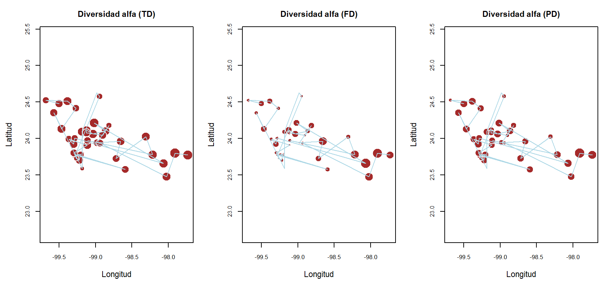
TipLectura del mapeo
Un sitio con un círculo grande en PD pero pequeño en FD tiene especies de linajes distintos que cumplen funciones parecidas (redundancia funcional entre linajes). El caso contrario, PD pequeña y FD grande, indica especies emparentadas con funciones muy diferentes.
B1. Números efectivos de Hill para diversidad filogenética alfa
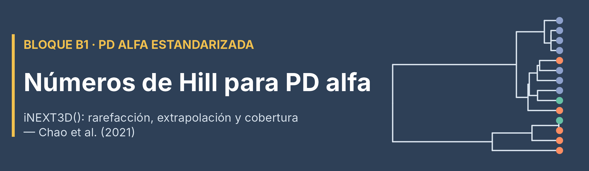
B1 expresa la PD en números efectivos (Chao et al., 2010; Chao et al., 2021). Con PDtype = "meanPD" el resultado se lee como el número efectivo de linajes, calculado a lo largo de todo el árbol (por defecto, Reftime es la profundidad del árbol).
- q = 0: todas las ramas cuentan igual (versión efectiva de la PD de Faith).
- q = 1: las ramas pesan según la abundancia que pasa por ellas.
- q = 2: dominan las ramas de los linajes más abundantes.
a. Información básica de PD y cobertura observada
Código
pd_alpha_inext <- iNEXT3D(
data = biol_zona, # Abundancias (especies x zonas)
diversity = "PD", # Dimensión filogenética
q = c(0, 1, 2),
datatype = "abundance",
knots = 20,
nboot = 10, # Bajo, para uso en clase
PDtree = arbol_filo, # Árbol — reemplaza a FDdistM del Taller 2
PDtype = "meanPD" # Número efectivo de linajes
)
pd_alpha_inext$PDInfo %>%
kbl(booktabs = TRUE, digits = 3, align = "c",
caption = "Información muestral por zona: n, riqueza observada, cobertura (SC), PD observada y tiempo de referencia") %>%
kable_styling(bootstrap_options = c("striped", "hover", "condensed"),
full_width = FALSE, position = "center") %>%
row_spec(0, bold = TRUE, color = "white", background = "#2E4057") %>%
scroll_box(width = "100%")| Assemblage | n | S.obs | SC(n) | SC(2n) | PD.obs | f1* | f2* | g1 | g2 | Reftime |
|---|---|---|---|---|---|---|---|---|---|---|
| M | 13166 | 30 | 1.000 | 1.000 | 364.813 | 5 | 1 | 24.523 | 3.426 | 50 |
| P | 5151 | 30 | 0.999 | 1.000 | 456.833 | 4 | 1 | 46.179 | 4.891 | 50 |
| RM | 414 | 53 | 0.961 | 0.988 | 861.170 | 16 | 12 | 178.811 | 111.538 | 50 |
b. Curvas de cobertura
Código
ggiNEXT3D(pd_alpha_inext, type = 3, facet.var = "Order.q") +
labs(title = "Curvas basadas en la cobertura de las muestras",
x = "Cobertura de la muestra", y = "Diversidad filogenética (meanPD)",
color = "Zona", fill = "Zona")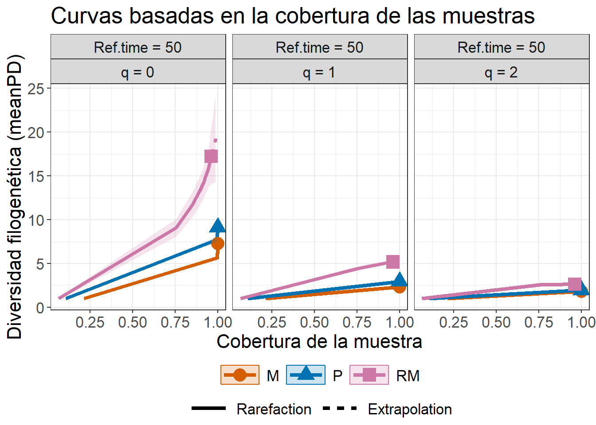
c. Comparar las zonas a una cobertura común
Código
nivel_cobertura <- min(pd_alpha_inext$PDInfo$`SC(n)`) # Cobertura observada más baja entre zonas
nivel_cobertura[1] 0.9614576Código
pd_alpha_cobertura <- estimate3D(
data = biol_zona,
diversity = "PD",
q = c(0, 1, 2),
datatype = "abundance",
base = "coverage", # Estandariza por cobertura
level = nivel_cobertura, # Mismo nivel para todas las zonas
nboot = 10,
PDtree = arbol_filo,
PDtype = "meanPD"
)
pd_alpha_cobertura %>%
dplyr::select(Assemblage, Order.q, SC, m, Method, qPD, qPD.LCL, qPD.UCL) %>%
kbl(booktabs = TRUE, digits = 3, align = "c",
caption = "Diversidad filogenética alfa (meanPD) a cobertura común") %>%
kable_styling(bootstrap_options = c("striped", "hover", "condensed"),
full_width = FALSE, position = "center") %>%
row_spec(0, bold = TRUE, color = "white", background = "#2E4057")| Assemblage | Order.q | SC | m | Method | qPD | qPD.LCL | qPD.UCL |
|---|---|---|---|---|---|---|---|
| M | 0 | 0.961 | 74.426 | Rarefaction | 3.657 | 3.601 | 3.714 |
| M | 1 | 0.961 | 74.426 | Rarefaction | 2.244 | 2.232 | 2.256 |
| M | 2 | 0.961 | 74.426 | Rarefaction | 1.799 | 1.791 | 1.807 |
| P | 0 | 0.961 | 110.723 | Rarefaction | 6.120 | 5.996 | 6.244 |
| P | 1 | 0.961 | 110.723 | Rarefaction | 2.871 | 2.828 | 2.914 |
| P | 2 | 0.961 | 110.723 | Rarefaction | 1.941 | 1.915 | 1.968 |
| RM | 0 | 0.961 | 414.000 | Rarefaction | 17.223 | 15.896 | 18.551 |
| RM | 1 | 0.961 | 414.000 | Rarefaction | 5.178 | 4.911 | 5.445 |
| RM | 2 | 0.961 | 414.000 | Rarefaction | 2.634 | 2.489 | 2.778 |
Es la misma cobertura común del Taller 2 (0.9615), fijada por RM, la zona con menos individuos. A ese nivel, M y P se comparan con muestras de apenas 74 a 111 individuos (columna m).
NotaLectura de B1
- A cobertura común,
RMmantiene la mayor PD alfa en los tres órdenes de q, yMla menor: el patrón de A1 y A2 no era un artefacto del esfuerzo de muestreo. - La diferencia es mucho mayor en q = 0 que en q = 2: buena parte de la PD de
RMestá en linajes raros (ramas largas con pocos individuos). - Las curvas por tamaño de muestra y el perfil de tiempo de referencia se desarrollan en la guía complementaria (sección 4).
B2. Números efectivos de Hill para diversidad filogenética beta
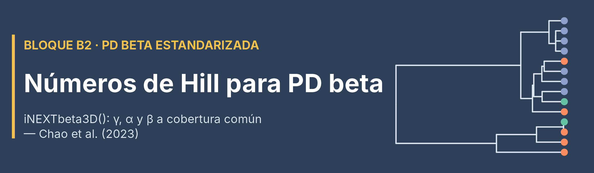
B2 extiende la lógica de B1 hacia la beta: iNEXTbeta3D() estandariza γ y α al mismo nivel de cobertura y obtiene \(\beta = \gamma / \alpha\) (Chao et al., 2023). Para dos zonas, β va de 1 (comparten los mismos linajes con las mismas abundancias) a 2 (no comparten ninguna rama).
a. Construir los pares de zonas y alinearlos con el árbol
Código
biol_PD_beta <- combn(zonas_id, 2, simplify = FALSE) %>%
set_names(map_chr(., paste, collapse = "_vs_")) %>%
purrr::map(\(p) biol_zona[, p, drop = FALSE]) # Dos columnas por par
source("alineador.R")
ali <- alinear_beta(biol_PD_beta, arbol_filo) # El árbol ya tiene nombres científicos
biol_PD_beta <- ali$pairs_aligned # Pares alineados con el árbol
arbol_PD <- ali$tree_aligned # Árbol podado y reordenado
ali$report[c("species_union", "species_kept", "tips_dropped")] # Debe conservar las 87 especies$species_union
[1] 87
$species_kept
[1] 87
$tips_dropped
character(0)
AdvertenciaEl alineador no corrige nombres
alinear_beta() garantiza que las matrices y el árbol coincidan, pero no que los nombres sean correctos: si se le entrega el árbol sin armonizar, descarta en silencio las especies que no reconoce. Por eso la armonización de la sección “Del árbol a la distancia filogenética” se hizo antes y a mano. Revisar siempre species_kept y tips_dropped.
b. Ejecutar iNEXTbeta3D()
Código
pd_beta_cobertura <- iNEXTbeta3D(
data = biol_PD_beta, # Lista de pares de zonas
diversity = "PD",
datatype = "abundance",
base = "coverage",
nboot = 10,
PDtree = arbol_PD, # Árbol alineado — reemplaza a FDdistM del Taller 2
PDtype = "meanPD"
)Código
ggiNEXTbeta3D(pd_beta_cobertura, type = "B") +
labs(x = "Cobertura de la muestra", y = "Diversidad filogenética (meanPD)",
color = "Comparación", fill = "Comparación",
shape = "Comparación", linetype = "Tipo de curva") +
theme(axis.text.x = element_text(angle = 45, hjust = 1))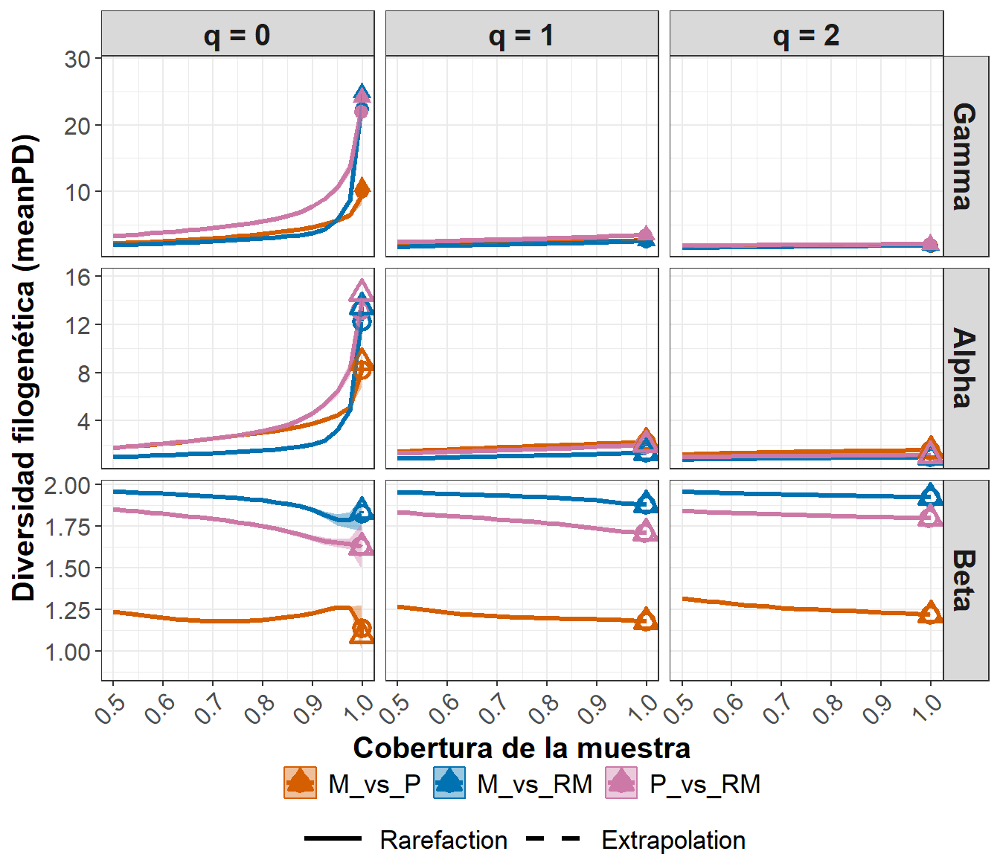
c. Las comparaciones a una cobertura común
Se usa como referencia la menor cobertura observada entre los pares (filas Observed_SC(n, alpha)): un nivel que las tres comparaciones alcanzaron con sus propios datos.
Código
nivel_beta_comun <- map_dfr(pd_beta_cobertura, ~ .x$beta) %>%
filter(Method == "Observed_SC(n, alpha)") %>%
pull(SC) %>%
min() # La cobertura observada más baja
nivel_beta_comun[1] 0.9964068Código
pd_beta_comun <- iNEXTbeta3D(
data = biol_PD_beta, diversity = "PD", datatype = "abundance",
base = "coverage", level = nivel_beta_comun, # Nivel común
nboot = 10, PDtree = arbol_PD, PDtype = "meanPD"
)
pd_beta_comun_tabla <- map_dfr(names(pd_beta_comun), function(p) {
b <- pd_beta_comun[[p]]$beta
tibble(Comparacion = p, Order.q = b$Order.q, SC = b$SC,
Beta = b$Beta, LCL = b$LCL, UCL = b$UCL,
`1-C` = pd_beta_comun[[p]]$`1-C`$Dissimilarity) # Disimilitud tipo Sørensen (0 a 1)
})
pd_beta_comun_tabla %>%
kbl(booktabs = TRUE, digits = 3, align = "c",
caption = paste0("Beta filogenética (meanPD) y disimilitud 1-C a cobertura común (",
round(nivel_beta_comun, 4), ")")) %>%
kable_styling(bootstrap_options = c("striped", "hover", "condensed"),
full_width = FALSE, position = "center") %>%
row_spec(0, bold = TRUE, color = "white", background = "#2E4057")| Comparacion | Order.q | SC | Beta | LCL | UCL | 1-C |
|---|---|---|---|---|---|---|
| M_vs_P | 0 | 0.996 | 1.210 | 1.174 | 1.246 | 0.210 |
| M_vs_P | 1 | 0.996 | 1.179 | 1.176 | 1.182 | 0.237 |
| M_vs_P | 2 | 0.996 | 1.219 | 1.216 | 1.222 | 0.359 |
| M_vs_RM | 0 | 0.996 | 1.808 | 1.727 | 1.890 | 0.808 |
| M_vs_RM | 1 | 0.996 | 1.881 | 1.877 | 1.885 | 0.911 |
| M_vs_RM | 2 | 0.996 | 1.927 | 1.925 | 1.928 | 0.962 |
| P_vs_RM | 0 | 0.996 | 1.632 | 1.535 | 1.729 | 0.632 |
| P_vs_RM | 1 | 0.996 | 1.712 | 1.706 | 1.718 | 0.776 |
| P_vs_RM | 2 | 0.996 | 1.800 | 1.793 | 1.808 | 0.889 |
ImportanteQué aporta B2
M_vs_RMtiene una beta cercana a 2 en los tres órdenes de q: montaña y desembocadura casi no comparten ramas del árbol, ni siquiera entre las especies dominantes.P_vs_RMes alta pero menor: la planicie ya recibe algunos linajes estuarinos (Ariopsis, Centropomus, Dajaus, Gobiomorus).M_vs_Pes baja: comparten la mayoría de los linajes de agua dulce.- La disimilitud
1-Ctraduce β a una escala de 0 a 1 (proporción de linajes no compartidos), más fácil de comunicar.
Integración A1 → A2 → B1 → B2
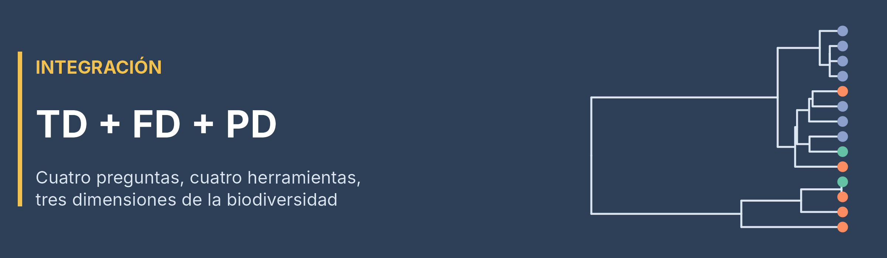
| Bloque | Pregunta principal | Escala | Herramienta |
|---|---|---|---|
| A1 | ¿Qué tan emparentadas están las especies que coexisten? | Principalmente α | pd(), mpd() |
| A2 | ¿Cómo se reparte la PD entre α, β y γ, y cómo se compara con TD y FD? | α–β–γ | Rao(dphyl = ...) |
| B1 | ¿Cuál es la PD alfa en números efectivos de linajes a cobertura común? | α | iNEXT3D() / estimate3D() |
| B2 | ¿Cuántos linajes comparten las zonas cuando se comparan con igual cobertura? | β y γ | iNEXTbeta3D() |
Código
rao_beta_3d %>%
dplyr::select(Comparacion, `Beta_prop Rao (%)` = PD) %>%
left_join(pd_beta_comun_tabla %>%
dplyr::select(Comparacion, Order.q, Beta) %>%
pivot_wider(names_from = Order.q, values_from = Beta, names_prefix = "Beta Hill q="),
by = "Comparacion") %>%
kbl(booktabs = TRUE, digits = 3, align = "c",
caption = "PD beta: partición de Rao (A2, sin estandarizar) frente a números de Hill a cobertura común (B2)") %>%
kable_styling(bootstrap_options = c("striped", "hover", "condensed"),
full_width = FALSE, position = "center") %>%
row_spec(0, bold = TRUE, color = "white", background = "#2E4057")| Comparacion | Beta_prop Rao (%) | Beta Hill q=0 | Beta Hill q=1 | Beta Hill q=2 |
|---|---|---|---|---|
| M_vs_P | 1.665 | 1.210 | 1.179 | 1.219 |
| M_vs_RM | 10.919 | 1.808 | 1.881 | 1.927 |
| P_vs_RM | 7.599 | 1.632 | 1.712 | 1.800 |
TipPreguntas para la discusión
- ¿A2 y B2 coinciden en el orden de las tres comparaciones?
- Comparando con el Taller 2: ¿la desembocadura se diferencia más de la montaña por sus funciones o por sus linajes?
- ¿Qué cambia en la interpretación al saber que el árbol es taxonómico y no molecular?
Ejercicios de práctica dirigida (individual)
Con los objetos construidos en las secciones anteriores se desarrollan los siguientes ejercicios.
Ejercicio 1 — Bloque A1
Calcular el MPD por sitio (no por zona) con mpd(biol1, phydist, abundance.weighted = TRUE) y resumirlo por zona. ¿Se mantiene el orden M < P < RM que se obtuvo con las zonas agregadas? ¿Por qué los sitios con una sola especie aparecen como NA?
Ejercicio 2 — Bloque A2
Repetir la partición de Rao con Jost = TRUE. ¿Qué ventaja tiene expresar Rao como número efectivo cuando se quiere comparar con los números de Hill de B1?
Ejercicio 3 — Bloque B1
Repetir estimate3D() con PDtype = "PD" en lugar de "meanPD". ¿Qué relación numérica hay entre ambos resultados? (pista: revisar la columna Reftime).
Ejercicio 4 — Bloque B2
Identificar qué comparación entre zonas tiene la mayor beta filogenética en cada orden q y compararla con la beta funcional del Taller 2 en el mismo orden. Responder en un párrafo la pregunta 2 de la discusión.
Ejercicio 5 — Transferencia al estudio de caso
Para el grupo taxonómico del estudio de caso, definir:
- de dónde saldrá el árbol (ver la Guía de complementos FD y PD para los estudios de caso) y qué niveles taxonómicos tendrá;
- qué nombres hay que verificar (sinónimos, errores, morfoespecies) y qué hacer con las especies que no estén en el árbol;
- qué unidades se compararán y si habrá sitios con una o ninguna especie que deban filtrarse.
Anticipando el estudio de caso
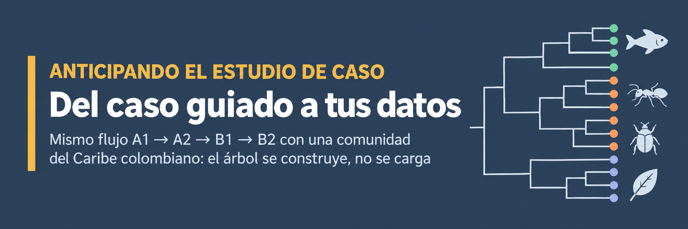
El flujo de este taller es transferible a cualquier grupo del Caribe colombiano; lo que cambia es de dónde sale el árbol. Con las bases de los estudios de caso, el árbol no se carga desde un .rds: se construye a partir de la clasificación de cada especie, como se explica en la Guía de complementos FD y PD para los estudios de caso, compartida en el curso.
ImportanteLista de chequeo antes de calcular PD con datos propios
setdiff()en ambos sentidos entre las especies de abundancias y las puntas del árbol: ambos deben quedar vacíos.- Limpiar espacios (
str_squish()), tildes y caracteres ocultos en las dos fuentes. - Revisar sinónimos y errores tipográficos con una tabla de correcciones explícita.
- Antes de excluir una especie, revisar su abundancia; si es posible, ubicarla en su género o clado.
- Filtrar los sitios sin especies antes de usar
Rao(). - Revisar la profundidad del árbol con
max(node.depth.edgelength(arbol)): no siempre es 50. - Declarar el tipo de árbol: si es taxonómico, la PD mide distinción taxonómica.
TipSobre el manuscrito ANVIDEA
El manuscrito ANVIDEA se encuentra actualmente en proceso de publicación. Para este curso se puede mencionar como trabajo de referencia que posteriormente servirá de guía, pero los materiales docentes no requieren reproducir ni divulgar información interna del manuscrito.
Material de apoyo y cuestionario PD

Para repasar y profundizar después de la sesión:
Guía complementaria · Diversidad filogenética — los temas que no caben en la sesión (modelos nulos, perfil de tiempo, espacio filogenético, puente FD–PD, elección de la cobertura), más 4 escenarios para elegir el bloque correcto y 4 interpretaciones con errores para identificar.
Guía complementaria · Ficha orientadora para decidir entre árboles taxonómicos y moleculares — En el Taller 3 (PD) se trabajó con un árbol construido a partir de la clasificación taxonómica de las especies, no a partir de ADN. Esta ficha explica qué limita ese tipo de árbol, cómo se redactan los resultados obtenidos con él y qué se puede hacer si el grupo decide usar una filogenia molecular en el estudio de caso.
Cuestionario de profundización · Diversidad filogenética (PD) — con datos simulados del caribe colombiano.
Enlaces de materiales complementarios